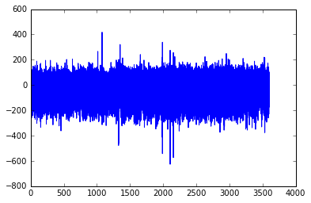
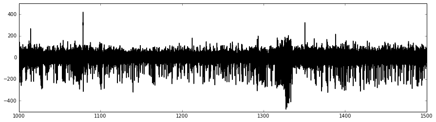

In [6]:
%matplotlib inline
import matplotlib.pyplot as plt
import pyecog as pg
In [8]:
pg
Out[8]:
<module 'pyecog' (namespace)>
In [2]:
ls
M1493298027.ndf
M1493298027_2017-04-27_14_00_27 tids_[1, 2, 5].h5
M1495834723_2017-05-26_22_38_43 tids_[5, 6, 7, 8, 9, 10].h5
PyECoG_logfile.log
Spell 1 - Automated Power Extraction (from NDF files) (AS, Nov 2016).ipynb
demo_loading_ndfs_notebook.ipynb
In [4]:
ndf_filepath = 'test_ndf_conversion/M1456819229.ndf'
ndf_filepath = 'M1493298027.ndf'
Loading the file:¶
- make a ndf_file object and then call load method
- when making the calling the NdfFile class, can specify the sampling frequency, or leave it as auto
- then call the load method, specify a single or list of read ids, or ‘all’.
In [7]:
%%time
ndf_file = pg.NdfFile(ndf_filepath, verbose = True, fs = 'auto')
ndf_file.load(read_ids='all',
auto_glitch_removal=True,
auto_resampling=True,
auto_filter=True)
---------------------------------------------------------------------------
AttributeError Traceback (most recent call last)
<ipython-input-7-882ad825f0a9> in <module>()
----> 1 get_ipython().run_cell_magic('time', '', "ndf_file = pg.NdfFile(ndf_filepath, verbose = True, fs = 'auto')\nndf_file.load(read_ids='all',\n auto_glitch_removal=True,\n auto_resampling=True,\n auto_filter=True)")
//anaconda/envs/python3/lib/python3.6/site-packages/IPython/core/interactiveshell.py in run_cell_magic(self, magic_name, line, cell)
2113 magic_arg_s = self.var_expand(line, stack_depth)
2114 with self.builtin_trap:
-> 2115 result = fn(magic_arg_s, cell)
2116 return result
2117
<decorator-gen-59> in time(self, line, cell, local_ns)
//anaconda/envs/python3/lib/python3.6/site-packages/IPython/core/magic.py in <lambda>(f, *a, **k)
186 # but it's overkill for just that one bit of state.
187 def magic_deco(arg):
--> 188 call = lambda f, *a, **k: f(*a, **k)
189
190 if callable(arg):
//anaconda/envs/python3/lib/python3.6/site-packages/IPython/core/magics/execution.py in time(self, line, cell, local_ns)
1178 else:
1179 st = clock2()
-> 1180 exec(code, glob, local_ns)
1181 end = clock2()
1182 out = None
<timed exec> in <module>()
AttributeError: module 'pyecog' has no attribute 'NdfFile'
To access individual transmitters:
ndf_file.tid_set
ontains the valid transmitter id’s the ndf file. And you can index the file with the transmitter number. Doing this returns a dictionary with data and time fields.
In [7]:
ndf_file.tid_set
Out[7]:
{1, 2, 6, 7}
In [9]:
ndf_file[2]
Out[9]:
{'data': array([-11.45658584, -10.66713262, -9.88404059, ..., -27.75042264,
-15.27384139, -9.18409354]),
'time': array([ 0.00000000e+00, 3.90625424e-03, 7.81250848e-03, ...,
3.59999219e+03, 3.59999609e+03, 3.60000000e+03])}
Can plot like so:
In [12]:
plt.plot(ndf_file[6]['time'], ndf_file[6]['data'])
Out[12]:
[<matplotlib.lines.Line2D at 0x107138630>]

There is also a really small convienance funtion in the module that lets you select time in seconds.
In [13]:
pg.basic_plot(ndf_file[6], time_tuple=(1000,1500))
Out[13]:
<matplotlib.axes._subplots.AxesSubplot at 0x10710c860>
To save to csv it is probably easiest to use pandas:
In [14]:
data = ndf_file[6]['data']
data.shape
Out[14]:
(921600,)
In [16]:
import pandas as pd
df = pd.DataFrame(data)
In [17]:
df.to_csv('transmitter_6.csv')
Saving the file:¶
- save method saves the file as a hdf5 file
In [19]:
%%time
ndf_file = pg.NdfFile(ndf_filepath, verbose = True, fs = 'auto')
ndf_file.load(read_ids=[6])
Tid 6: Detected 2129 bad messages out of 915624 Remaining : 913495
Tid 6: removed 4 datapoints as glitches. There were 23267 possible glitches.
Tid 6: regularised fs to 256 Hz 921600 datapoints
CPU times: user 323 ms, sys: 122 ms, total: 446 ms
Wall time: 457 ms
In [20]:
%%time
ndf_file.save()
Saved data as:test_ndf_conversion/M1456819229_Tid_[6].h5 Resampled = True
CPU times: user 296 ms, sys: 10.9 ms, total: 307 ms
Wall time: 309 ms
Loading the file after saving¶
- much quicker… :p
In [23]:
%time
h5file = pg.H5File('test_ndf_conversion/M1456819229_Tid_[6].h5')
CPU times: user 2 µs, sys: 0 ns, total: 2 µs
Wall time: 5.01 µs
In [24]:
h5file[6]
Out[24]:
{'data': array([-66.79174042, -66.11012268, -65.44735718, ..., -3.83387399,
10.01371384, -1.83560932], dtype=float32),
'features': None,
'time': array([ 0.00000000e+00, 3.90625419e-03, 7.81250838e-03, ...,
3.59999219e+03, 3.59999609e+03, 3.60000000e+03], dtype=float32)}
In [25]:
pg.basic_plot(h5file[6], (1000,1500))
Out[25]:
<matplotlib.axes._subplots.AxesSubplot at 0x107160ef0>

to convert a directory to h5 files:¶
-uses the default loading options
In [26]:
handler = pg.DataHandler()
In [30]:
%%time
handler.convert_ndf_directory_to_h5(ndf_dir = 'test_ndf_conversion',
tids = 'all',
fs = 256,
n_cores = -1,
save_dir = 'h5_converted')
5 Files for conversion. Transmitters: all
Progress: |██████████████████████████████████████████████████| 100.0% Complete
CPU times: user 72 ms, sys: 77.8 ms, total: 150 ms
Wall time: 3.84 s
In [ ]: